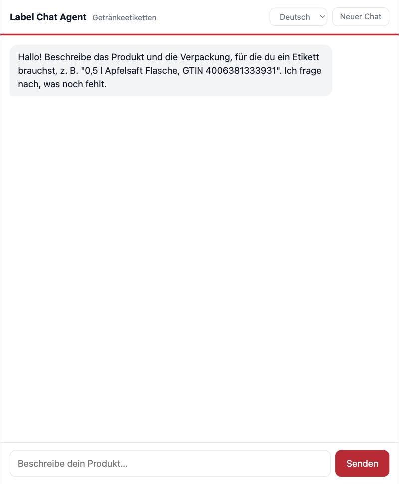
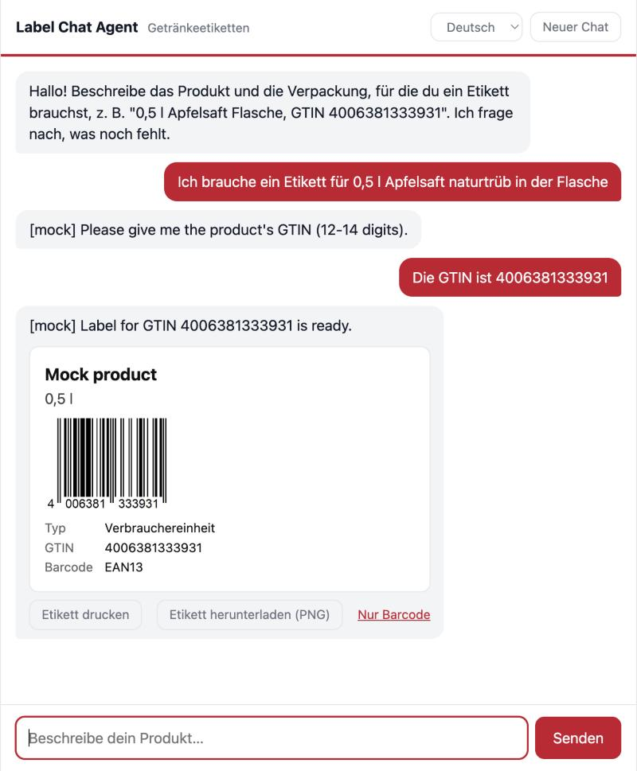
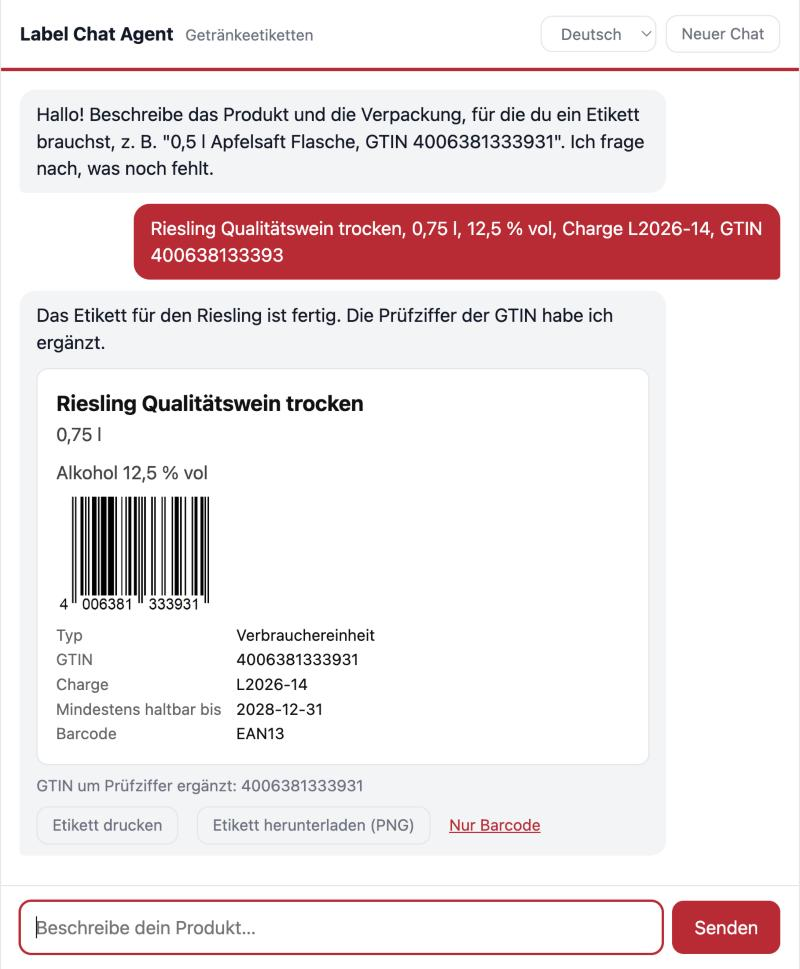
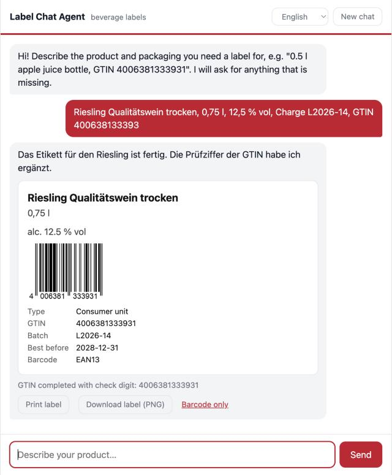
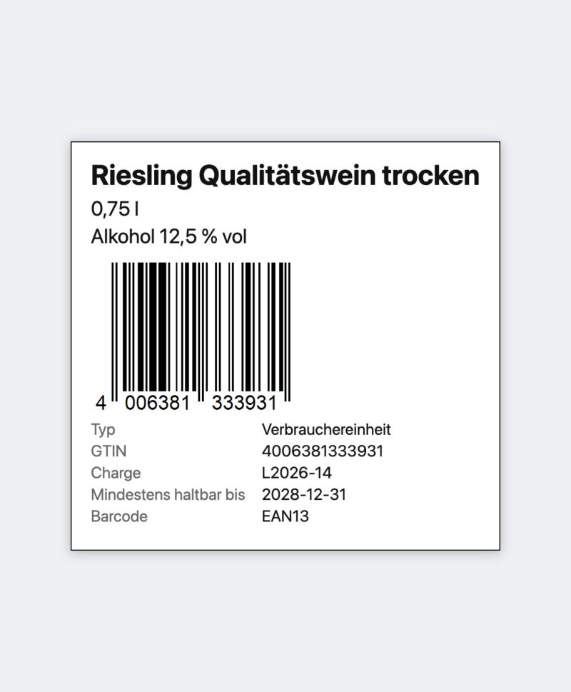
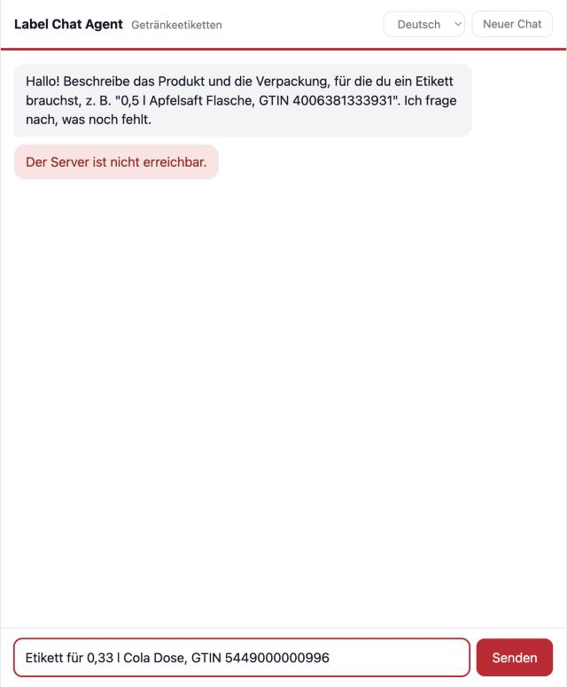
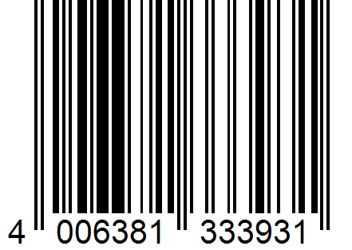
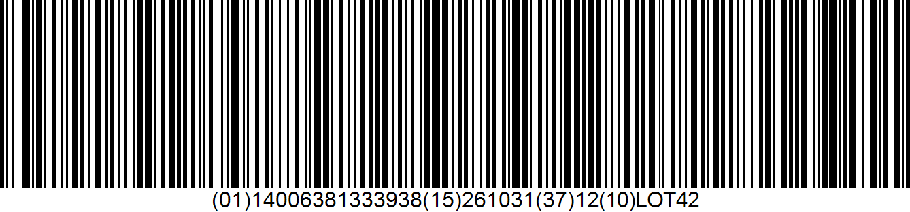
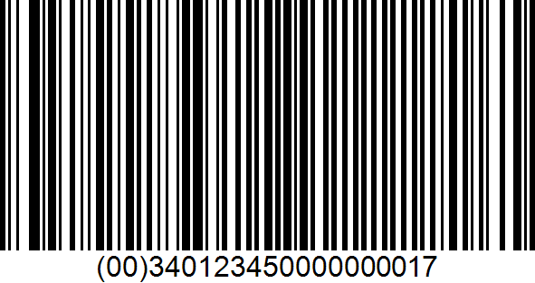

C# / ASP.NET Core (.NET 10), HTML/CSS/JavaScript, Google Gemini, TEC-IT Barcode API
Entwicklung
Claude Code (Modell Claude Sonnet 5.5), eine Sitzung; bereinigtes Sitzungsprotokoll in docs/session-log/
Aufgewendete Zeit
ca. 2 Std. 35 Min. (09:33 bis ca. 12:08 Uhr), siehe Kapitel 12
1 Zusammenfassung
Die Anwendung ist ein browserbasierter Chat, in dem Mitarbeitende Produkt- und Verpackungsangaben in natürlicher Sprache eingeben. Ein LLM-basierter Agent (Google Gemini) extrahiert daraus eine Etikettenspezifikation, erkennt fehlende oder widersprüchliche Angaben und fragt gezielt nach. Sobald die Angaben vollständig sind, prüft das Backend sie deterministisch (Prüfziffern, Barcode-Typ zur Verpackungsstufe, Datum, Nettovolumen, Alkoholgehalt), erzeugt über die TEC-IT Barcode API den Barcode und zeigt das fertige Etikett direkt im Chat an. Das Etikett kann gedruckt oder als PNG (vollständig oder nur der Barcode) heruntergeladen werden. Die Oberfläche ist zweisprachig (Deutsch/Englisch).
162automatisierte Tests, alle bestanden
45+Git-Commits in kleinen Schritten
13unterstützte Barcode-Typen
~1,1kZeilen Backend-Code, ~1,4k Zeilen Tests
Die Aufgabe ist bewusst offen gestellt. Die wichtigsten Entscheidungen (Kapitel 4 und 5) sind: Das LLM extrahiert und fragt nach, während deterministischer Code validiert und die Barcode-Daten erzeugt; ein Zustand liegt im Browser, das Backend ist zustandslos; und der Umfang von „konform" wurde ausdrücklich auf Barcode-/GS1-Korrektheit plus Nettovolumen und Alkoholgehalt festgelegt (Kapitel 3).
2 Anforderungen und Erfüllung
Anforderung aus der Aufgabenstellung
Umsetzung
Browserbasierte Full-Stack-Webanwendung
ASP.NET Core liefert API und Frontend aus; läuft lokal mit dotnet run
Backend mit C# und .NET
.NET 10, Minimal API, ca. 1.100 Zeilen
Frontend mit HTML, CSS und JavaScript
Reines JavaScript ohne Build-Schritt (Chat, Etikettenkarte, Canvas-Export, Sprachumschaltung)
Nutzbare Chat-Oberfläche für mehrstufige Interaktion
Verlauf, Rückfragen, Korrekturen nach dem Etikett, „Neuer Chat" (Kapitel 7)
LLM-basierte Agentenkomponente
Gemini mit System-Prompt und strukturierter Ausgabe (JSON-Schema); Feedback-Runde bei Validierungsfehlern
Erkennung unvollständiger oder widersprüchlicher Angaben
Zweistufig: LLM (Sprache) und LabelValidator (Regeln, Prüfziffern) – Beispiele in Kapitel 8
Rückfragen bei fehlenden oder unklaren Angaben
Status needs_info mit maximal drei gezielten Fragen pro Runde
Darstellung des Ergebnisses im Chat
Etikettenkarte mit Barcode, Produktangaben, Druck- und Download-Funktion
Tests, Konfiguration, Prompts, Artefakte
162 Tests; Prompt in Prompts/system-prompt.md; README mit Einrichtung
3 Interpretation und Annahmen
Die Aufgabe verlangt „konforme, druckfertige Etiketten", stellt aber ausdrücklich keine Regelpakete bereit. Ich habe das wie folgt eingegrenzt und dokumentiert:
Konformität bedeutet hier: korrekte Barcode-Daten nach GS1 (Prüfziffern, Application Identifier, passender Typ je Verpackungsstufe) sowie zwei inhaltliche Regeln, die auf jedem Getränkeetikett vorkommen: Nettovolumen und Alkoholgehalt. Diese Regeln sind bewusst vereinfachte Annahmen und keine Rechtsberatung. Weitere Inhalte (Allergene, Zutaten, Produzentenadresse, Pfandzeichen …) sind als offene Punkte in Kapitel 10 aufgeführt.
Verpackungsstufen: Verbrauchereinheit (Flasche, Dose), Karton/Kasten (case) und Palette. Sie bestimmen den Standard-Barcode: EAN-13, EAN-14 bzw. GS1-128 (Palette mit SSCC).
Ein Etikett pro Gespräch. Mehrere Etiketten (Flasche, Karton, Palette) erfordern getrennte Chats.
Barcode-Typen: eine kuratierte Teilmenge aus Abschnitt 3 der API-Referenz – nur Typen, deren Datenformat der Validator selbst aufbauen kann (u. a. EAN-13/8/14, UPC-A, GS1-128, Code 128/39, QR, DataMatrix, GS1-2D, GS1 Digital Link).
Zugangsdaten der API sind „temporär"; der verwendete Zugang verhält sich wie ein Nicht-Abonnent (max. 300 DPI, kein SVG, Ratenlimit pro IP).
GS1 Digital Link verwendet den generischen GS1-Resolver (id.gs1.org), damit keine URL abgefragt werden muss.
4 Architektur
Ablauf einer Runde. Der Browser sendet den gesamten Gesprächsverlauf plus den zuletzt bekannten Etikettenzustand an POST /api/chat. Der LabelAgent lässt das Modell antworten (JSON: Nachricht, Status, Probleme, Etikettenfelder) und führt dessen Felder als Patch in den bisherigen Zustand ein. Meldet das Modell „bereit", validiert der LabelValidator das Etikett, baut die Barcode-Daten auf (z. B. (01)14006381333938(15)261031(10)LOT42) und – falls eine Größe verlangt wurde – prüft per Probe-Rendering, ob die Daten in die Fläche passen. Erst dann wird der Barcode bei TEC-IT angefordert und als PNG (Data-URL) zurückgegeben. Widerspricht die Validierung dem Modell, gehen die Befunde einmal an das Modell zurück, das daraus eine Rückfrage in der Sprache der Nutzerin bzw. des Nutzers formuliert.
Das LLM extrahiert und fragt, Code validiert und baut. Sprachmodelle rechnen Prüfziffern unzuverlässig, und die Barcode-API validiert GS1-Daten nicht (ein falsches Prüfzeichen wird trotzdem gezeichnet). Deshalb erzeugt nur der Validator die Barcode-Daten.
Deterministische Pipeline statt Tool-Calling-Agent. Ein fester Ablauf (extrahieren, validieren, rendern, höchstens eine Feedback-Runde) ist vorhersagbar und kostet wenige Anfragen – wichtig bei etwa 20 Anfragen pro Modell und Tag im kostenlosen Gemini-Kontingent. Eine Variante, in der das Modell Werkzeuge selbst aufruft, ist ein möglicher nächster Schritt.
Zustandsloses Backend. Der Browser schickt Verlauf und Etikettenzustand mit. Das Feld label des Modells wirkt als Patch (null = unverändert, Löschen nur über eine explizite Liste cleared), weil schwächere Modelle bekannte Felder gelegentlich weglassen.
Die Antwort der Feedback-Runde wird nie gerendert. Korrigiert das Modell dort still einen Wert (z. B. die Prüfziffer), wäre das eine Zahl, die niemand bestätigt hat. Es zählt nur eine Rückfrage; der Zustand behält den Originalwert.
Strukturierte Ausgabe. Gemini läuft mit JSON-Schema, alle Etikett-Schlüssel sind Pflicht (nullable) und beschrieben; Temperatur 0,2. Ohne required ließ das Modell Felder weg (siehe Kapitel 6).
Das Etikett entsteht im Browser. Die API liefert nur Barcodes; Text, Fakten und Layout gestaltet das Frontend (HTML-Karte für Bildschirm und Druck, Canvas-PNG mit 300-DPI-Kennung für den Download).
Deterministische Größen. Ohne Vorgabe wählt die API selbst einen Maßstab (ein langer GS1-128 war 240 mm breit). Das Backend setzt je Symbologie eine Modulbreite (EAN/UPC 0,33 mm, GS1-128 0,25 mm, 2D 0,5 mm); bei expliziter Größe wird unit=fit verwendet, weil unit=mm den Barcode abschneidet.
Größenprüfung durch Messung. Eine rechnerische Schätzung der Symbolbreite lag bis zu 40 % daneben. Stattdessen rendert das Backend einmal mit der kleinsten lesbaren Balkenbreite, liest die Breite aus dem PNG-Header und vergleicht.
Geheimnisse und Konfiguration. Zugangsdaten nur über Umgebungsvariablen oder user-secrets; die Anwendung startet nicht, wenn sie fehlen. Die Access-ID wird im POST-Body gesendet, nie in einer URL. Protokolle enthalten keine Nutzereingaben.
Schutz von Kontingenten. Größen- und Rollenprüfung der Anfrage, 12 Runden pro Minute und IP, Timeouts (Gemini 45 s, Barcode 20 s, Browser 90 s). Nur HTTP 503 wird (einmal) wiederholt; 429 ist ein Kontingentlimit, jede Wiederholung würde es weiter verbrauchen.
Sprache. Das Modell antwortet in der Sprache der Eingabe; die Oberfläche ist übersetzt (DE/EN). Hinweise des Backends (z. B. „GTIN um Prüfziffer ergänzt") reisen als sprachneutrale Codes und werden im Browser übersetzt.
Reines JavaScript. Kein Framework, kein Build-Schritt: Das Projekt bleibt klein und läuft mit dem .NET SDK allein.
6 Fehlversuche und Richtungswechsel
Die folgenden Punkte wurden im Verlauf entdeckt und behoben; sie sind auch im Sitzungsprotokoll nachvollziehbar.
Beobachtung
Ursache und Konsequenz
Erste API-Probe lieferte durchweg Fehlerbilder
Die Access-ID war leer (user-secrets kennt kein get). Probe wiederholt; dabei entdeckt: Fehler kommen als HTTP 200 mit GIF, onerror=500 wird nicht beachtet – der Client erkennt Fehler am Medientyp.
Barcode-Daten mit falscher Prüfziffer wurden gezeichnet
Die API prüft GS1-Daten nicht; Prüfziffern werden deshalb im Backend verifiziert.
gemini-2.5-flash antwortete 404
Modell für neue Nutzer abgeschaltet; Wechsel auf gemini-3.8-flash, das wiederholt mit 503 überlastet war, dann gemini-3.5-flash und zuletzt gemini-3.5-flash-lite. Das Modell ist per Konfiguration wählbar.
unit=mm schnitt den Barcode ab
Bei fester Größe wird unit=fit verwendet, das den ganzen Barcode einpasst.
Barcodes waren ohne Vorgabe unbrauchbar groß (bis 240 mm)
Modulbreite je Symbologie (0,33 / 0,25 / 0,5 mm); EAN-13 ist nun 37,3 mm breit (GS1-Nennmaß).
Wiederholung bei 429 verbrauchte Kontingent
Wiederholt wird nur 503, und nur einmal.
Modell „reparierte" still eine Prüfziffer und meldete „bereit"
Antwort der Feedback-Runde wird nie gerendert (Entscheidung 4); Regressionstest.
Response-Schema ließ Felder weg (nur der Produktname kam zurück)
Ursache: Schlüssel waren nicht required. Alle Etikett-Schlüssel sind nun Pflicht (nullable) und beschrieben; live bestätigt.
Rechnerische Schätzung der Symbolbreite wich um bis zu 40 % ab
Ersetzt durch Messung über ein Probe-Rendering (Entscheidung 8).
Ein Testhelfer überschrieb Testwerte und machte Tests wirkungslos
Beim Hinzufügen der Alkohol-Tests entdeckt und korrigiert.
Download lieferte nur den Barcode, nicht das Etikett
Vollständiges Etikett wird im Browser per Canvas erzeugt; der reine Barcode bleibt als eigene Option.
Umgebungsvariablen waren in der Entwicklungsumgebung nicht sichtbar
Wechsel auf dotnet user-secrets; README erklärt beide Wege.
7 Screenshots
Die Screenshots zeigen die laufende Anwendung. Für die Bildschirmfotos wurde der Mock-Modus (deterministische Antworten, gleiches Protokoll) verwendet, um das begrenzte Gemini-Kontingent zu schonen; der Barcode kommt jeweils live von der TEC-IT API. Echte Gemini-Gespräche sind als Protokoll in Kapitel 8 wiedergegeben.

Abb. 1 Startseite (deutsch) mit Begrüßung, Sprachauswahl und „Neuer Chat".

Abb. 2 Mehrstufiger Dialog: unvollständige Angabe, Rückfrage nach der GTIN, danach die Etikettenkarte mit Barcode und den Aktionen „Etikett drucken", „Etikett herunterladen (PNG)" und „Nur Barcode" (Mock-Modus, Barcode live von TEC-IT).

Abb. 3 Etikettenkarte mit Produktname, Volumen, Alkoholgehalt („Alkohol 12,5 % vol"), Barcode und Fakten. Die GTIN wurde um die Prüfziffer ergänzt, das Frontend zeigt dazu einen übersetzten Hinweis. Beispieldaten; der Barcode stammt von der TEC-IT API.

Abb. 4 Dieselbe Unterhaltung nach Umschalten auf Englisch: Beschriftungen, Hinweis und Dezimaltrennzeichen („12.5") wechseln sofort, auch beim bereits angezeigten Etikett.

Abb. 5 Das heruntergeladene Etikett („Etikett herunterladen (PNG)"): eine PNG-Datei mit 300 DPI und Auflösungskennung (890 × 848 Pixel, ca. 75 × 72 mm) mit Titel, Volumen, Alkoholgehalt, Barcode in echter Größe und Fakten.

Abb. 6 Fehlerfall (Server gestoppt): verständliche Meldung; der eingegebene Text bleibt im Eingabefeld, sodass er nicht neu getippt werden muss.
Nicht als Screenshot enthalten: der Druckdialog des Browsers (nicht automatisiert aufnehmbar). „Etikett drucken" druckt nur die Etikettenkarte, nicht den Chat.
8 Repräsentative Chatverläufe
Die folgenden Gespräche wurden mit dem echten Gemini-Modell und der echten TEC-IT API geführt (Protokolle im Repository unter docs/samples/). Unter jeder Antwort steht der vom Backend geführte Etikettenzustand. „Rückfrage" bedeutet needs_info, „bereit" bedeutet ready (Etikett wurde gerendert).
bereitDer Riesling Qualitätswein (0,75 l, 12,5 % vol, Flasche) mit der GTIN 4006381333931 ist vollständig erfasst. Das Etikett wird als EAN13 erstellt.
Widerspruch: Apfelsaft mit 12 % vol (gemini-3.5-flash-lite)
Apfelsaft naturtrüb 1 l Flasche mit 12 % vol, GTIN 4006381333931
RückfrageEin Apfelsaft naturtrüb kann kein alkoholisches Getränk mit 12 % vol sein. Bitte korrigieren Sie entweder die Produktbeschreibung, entfernen Sie den Alkoholgehalt oder setzen Sie den Alkoholgehalt auf null (alkoholfrei).
Karton mit relativem Datum und zu kleiner Etikettengröße (gemini-3.5-flash-lite)
Karton mit 12 Flaschen Apfelsaft 0,75 l, GTIN 14006381333938, GS1-128, Charge LOT42, MHD Ende nächsten Monats, Etikettengröße 60 mm x 30 mm
RückfrageDie Etikettenbreite von 60 mm ist zu klein für den GS1-128-Barcode mit den aktuellen Daten. Es werden mindestens 114 mm benötigt. Möchten Sie die Etikettengröße anpassen?
Zum letzten Gespräch: Das relative Datum wurde korrekt aufgelöst (2026-10-31, Erstellungsdatum 29.09.2026) und ohne unnötige Bestätigung übernommen. Die Größenwarnung stützt sich auf die Messung der API („mindestens 114 mm") und nicht auf eine Schätzung.
Datum in der Vergangenheit, Bestätigung durch die Nutzerin / den Nutzer (gemini-3.5-flash-lite)
Cola Dose 0,33 l im Karton zu 24 Stück, GS1-128, GTIN 15449000000993, MHD 2020-03-31
RückfrageDas MHD 31.03.2020 liegt in der Vergangenheit. Ist das beabsichtigt (z. B. Nachdruck), oder soll ein anderes Datum verwendet werden?
RückfrageDie Charge wurde entfernt. Für eine Cola-Dose als Handelseinheit ist der Standard-Barcode EAN13 bestens geeignet. Soll ich EAN13 verwenden und damit das Etikett erstellen?
Beobachtung zum kleinen Modell: Im Gespräch „Apfelsaft mit 12 % vol" stufte das Modell den Saft selbst als alkoholisch ein; der Widerspruch wurde also von der Argumentation des Modells erkannt und nicht von der Validierungsregel (die alcoholic = false voraussetzt). Außerdem fragte es im letzten Gespräch nach einem MHD, das gar nicht verlangt war. Die Inhaltsregeln hängen damit von der Klassifikation des Modells ab (Kapitel 9).
8.2 Frühere Gespräche (gemini-3.5-flash, vor Einführung von Schema und Inhaltsregeln)
Diese Verläufe entstanden vor den späteren Änderungen (Response-Schema, Nettovolumen und Alkohol, Größenprüfung) und wurden auf der endgültigen Konfiguration nicht wiederholt.
Vage Angabe, dann GTIN (gemini-3.5-flash, vor dem Response-Schema)
Ich brauche ein Etikett für unseren Apfelsaft naturtrüb, 0,75 l Flasche.
RückfrageIch habe die Daten für Ihren Apfelsaft naturtrüb (0,75 l Flasche) erfasst. Für das Flaschenetikett (Consumer Unit) wird standardmäßig ein EAN-13 Barcode verwendet. Dafür benötige ich noch die GTIN (EAN-Nummer). Könnten Sie mir diese bitte mitteilen?
Die GTIN ist 4006381333931
bereitVielen Dank! Die GTIN wurde erfolgreich erfasst. Das Etikett für den Apfelsaft naturtrüb (0,75 l Flasche) mit EAN-13 Barcode ist nun vollständig und bereit für den Druck.
Widersprüchliche Angaben in einer Nachricht (gemini-3.5-flash, vor dem Response-Schema)
Palettenetikett für 6er-Tray Cola 0,33 l Dosen, EAN13 Code 5449000000996, Charge L2024-17, MHD 31.03.2020
RückfrageIch habe Ihre Angaben erfasst, es gibt jedoch noch Klärungsbedarf: 1. Barcode-Typ & Daten: Sie haben EAN13 gewünscht, aber EAN13 kann keine Charge und kein MHD im Barcode speichern. Für Paletten mit diesen Daten wird der Standard GS1-128 genutzt. Sollen wir auf GS1-128 wechseln? 2. MHD in der Vergangenheit: Das Datum 31.03.2020 liegt in der Vergangenheit. Bitte bestätigen oder korrigieren Sie das Datum. 3. SSCC (NVE): Für ein Palettenetikett wird eine 18-stellige SSCC benötigt. Haben Sie diese zur Hand, oder handelt es sich doch um ein Karton-/Tray-Etikett (Case)?
Falsche Prüfziffer (gemini-3.5-flash, vor dem Response-Schema)
Etikett für Orangensaft 1 l Flasche, EAN13 4006381333932
RückfrageDie eingegebene GTIN 4006381333932 ist leider ungültig, da die Prüfziffer nicht korrekt ist (erwartet wird eine 1 am Ende, also 4006381333931). Bitte prüfen Sie die Nummer und korrigieren Sie sie.
Änderung nach fertigem Etikett (gemini-3.5-flash, vor dem Response-Schema)
Cola 0,33 l Dose, GTIN 5449000000996
bereitIch habe die Spezifikation für das Cola-Dosen-Etikett (Einzelartikel) mit der GTIN 5449000000996 und dem Standard-Barcode EAN-13 erstellt. Das Etikett ist bereit zur Erstellung.
Nimm lieber einen QR-Code mit Digital Link und Charge L42 dazu
bereitIch habe die Spezifikation angepasst: Der Barcode wurde auf einen GS1 Digital Link QR-Code umgestellt und die Chargennummer 'L42' wurde hinzugefügt. Das Etikett ist bereit zur Erstellung.
9 Tests, Qualitätssicherung und Betrieb
162 von 162 Tests bestanden (dotnet test, ca. 0,8 s). Kein Test verwendet das Netzwerk oder das Gemini-Kontingent: fehlerhafte und erfolgreiche HTTP-Antworten werden mit Fake-Handlern nachgestellt.
Bereit-/Rückfrage-Pfad, Feedback-Runde (inkl. „korrigierter Wert wird nie gerendert"), Zustands-Patch, Normalisierung, Größenprobe, Logging ohne Nutzerwerte
Clients
Gemini (Systemprompt mit Datum, Schema, Wiederholung nur bei 503, Timeouts, Nicht-JSON-Fehler), Barcode-Client (Fehlerbilder, Netzwerkfehler, Access-ID im Body)
HTTP-Endpunkt
Prozessinterner Server: Anfragegrenzen, Ratenbegrenzung, Fehlerantworten, Auslieferung des Frontends
Konfiguration
Provider-Auswahl (unbekannter Wert und fehlende Schlüssel brechen den Start ab)
Nicht automatisiert getestet: das JavaScript-Frontend (manuell im Browser geprüft), der echte Druck sowie das Verhalten der Live-Modelle (in gezielten Live-Sitzungen geprüft, siehe Kapitel 8).
Protokollierung. Standard-Konsolenprotokoll mit Rundenergebnis, Namen fehlgeschlagener Validierungsfelder, Antwortzeiten und Fehlern von Gemini und Barcode-API – ohne Nutzertexte, Werte oder Zugangsdaten.
Beispiel-Etiketten
Das vollständige Etikett zeigt Abb. 5. Die folgenden Barcodes stammen direkt von der TEC-IT API, mit genau den Parametern, die die Anwendung erzeugt (300 DPI, Modulbreite je Symbologie). Sie sind hier nicht maßstäblich dargestellt.

Abb. 7 Verbrauchereinheit: EAN-13, 37,3 × 26,5 mm (GS1-Nennmaß). Die GTIN wurde um die Prüfziffer ergänzt.Abb. 8 GS1 Digital Link als QR-Code (14,6 mm): id.gs1.org/01/04006381333931/10/L2026-14?15=281231.

Abb. 9 Karton: GS1-128 mit GTIN-14, Mindesthaltbarkeitsdatum, Stückzahl und Charge: (01)14006381333938(15)261031(37)12(10)LOT42. Bei 0,25 mm Balkenbreite ist der Code 113 mm breit; für kleinere Etiketten warnt die Größenprüfung.

Abb. 10 Palette: GS1-128 mit SSCC (00)340123450000000017 (Prüfziffer im Backend berechnet und geprüft), 50 mm breit.
10 Offene Punkte (Etiketteninhalt, nicht abgedeckt)
Bewusst nicht umgesetzt, weil die Aufgabe keine Regelpakete liefert und der Umfang begrenzt ist:
Allergenkennzeichnung (z. B. Sulfite) sowie Zutatenliste und Nährwerttabelle
Marktvarianten (EU vs. USA/UPC-A) über die Wahl des Barcode-Typs hinaus
Layout-Vorgaben (Mindestschriftgrößen, e-Zeichen) und ein festes Etikettenraster mit mehreren Barcodes
11 Bekannte Einschränkungen und nächste Schritte
Einschränkungen
Ausgabe ist ein PNG mit 300 DPI (Grenze des verwendeten Zugangs, kein SVG); sehr große Druckformate sind nicht scharf. Der Browserdruck ist nur bei 100 % Skalierung maßstäblich.
Barcodes wurden nicht mit einem Scanner geprüft; die Größenprüfung nutzt angenäherte GS1-Mindestbalkenbreiten. Die Trennung variabler GS1-Felder (FNC1) übernimmt die API und wurde nicht separat verifiziert.
Die Regeln zu Alkoholgehalt und Nettovolumen sind vereinfachte Annahmen; die Alkoholregel hängt von der Modellklassifikation (alcoholic) ab und kann durch Fehlklassifikation umgangen werden.
Ein Etikett je Gespräch; GS1 Digital Link zeigt auf den generischen GS1-Resolver, der nur registrierte GTINs auflöst.
Das kostenlose Gemini-Kontingent ist klein (ca. 20 Anfragen pro Modell und Tag) und gelegentlich überlastet (503); die Anwendung meldet das, kann es aber nicht umgehen.
Meldungen des Servers (Fehler, Rückfalltext des Validators) sind englisch; Oberfläche und Hinweise sind übersetzt, das Modell antwortet in der Eingabesprache.
Kein Verlauf über das Neuladen hinaus, keine Authentifizierung, kein HTTPS – gedacht für den lokalen Betrieb.
Die Live-Prüfung der endgültigen Konfiguration erfolgte mit gemini-3.5-flash-lite; ein Teil der früheren Szenarien wurde nicht wiederholt (Kapitel 8.2).
Nächste Schritte
Etiketteninhalte aus Kapitel 10 als Regelpaket ergänzen (je Markt konfigurierbar).
Mehrere Etiketten je Gespräch (Flasche, Karton, Palette aus einer Beschreibung).
Tool-Calling-Variante des Agenten (Modell ruft validate und render selbst auf) und Vergleich mit der festen Pipeline.
Prüfung mit Scanner bzw. Barcode-Verifier; Vektorausgabe (SVG/PDF) mit einem Abonnement-Zugang.
Persistenz des Verlaufs, Authentifizierung und Bereitstellung in einer Testumgebung.
Automatisierte Frontend-Tests und ein wiederholbares Live-Testskript für die Modellszenarien.
12 Aufgewendete Zeit und Entwicklungsprozess
Angabe
Wert
Beginn
29.09.2026, 09:33 Uhr (Anlegen des Projektordners; erster Commit 09:49 Uhr)
Stand bei Erstellung dieser Dokumentation
ca. 12:08 Uhr
Dauer (Wanduhr)
ca. 2 Std. 35 Min. Wanduhrzeit, einschließlich der Wartezeiten auf überlastete oder ausgeschöpfte Gemini-Modelle und der Analyse der API-Eigenheiten
Nicht enthalten
der abschließende manuelle Test durch den Autor; das Sitzungsprotokoll wurde danach exportiert, bereinigt und im Repository abgelegt (docs/session-log/, PDF und vollständige Markdown-Fassung)
Vorgehen. Die Lösung entstand mit dem Coding-Agenten Claude Code (Modell Claude Sonnet 5.5) in einer Sitzung: Aufgaben und API-Referenz lesen, Grundgerüst (Backend, minimales Frontend, Git, .gitignore), Barcode-Client mit Erkundung der echten API, Agent und Validator, Etikettendarstellung, Härtung (Grenzen, Zeitlimits, Logging), Zweisprachigkeit, Größenprüfung, Live-Tests mit Gemini, Code-Review mit anschließender Fehlerbehebung, Dokumentation. Das Protokoll enthält die Fehlversuche (Kapitel 6). Der Verlauf ist in über 45 kleinen Commits nachvollziehbar; der System-Prompt liegt im Repository (src/ChatAgent.Api/Prompts/system-prompt.md).
Einrichtung und Bedienung sind im README.md beschrieben (Voraussetzungen, Zugangsdaten per Umgebungsvariable oder user-secrets für macOS, Linux und Windows, Start mit Gemini oder Mock, Tests, Fehlerbehebung, Konfigurationsreferenz).
git clone https://github.com/valihagi/ChatAgentProject.git
cd ChatAgentProject
dotnet user-secrets set TECIT_ACCESS_ID "<id>" --project src/ChatAgent.Api
dotnet user-secrets set GEMINI_API_KEY "<key>" --project src/ChatAgent.Api
dotnet run --project src/ChatAgent.Api # http://localhost:5080 (offline: Chat__Provider=Mock)